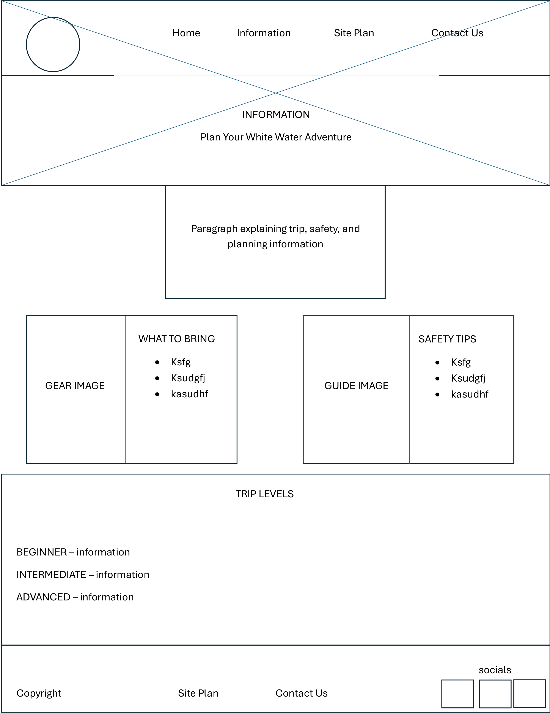

Overview
Purpose
Our purpose is to provide clear information, safety practices, and trip options. We want to highlight the excitement and beauty of white water rafting.
Audience
We are looking for people seeking adventure! Our audience wants ease and guidance for the perfect experience.
Branding
Website Logo

Style Guide
Color Palette
Palette URL:
https://coolors.co/4a4b2f-274c77-adcad6-280000-ad8a64| Primary | Secondary | Accent 1 | Accent 2 |
|---|---|---|---|
| [#ADCAD6] | [#274C77] | [#4A4B2F] | [#AD8A64 |
Typography
Heading Font: Macondo
Paragraph Font: Macondo
Normal paragraph example
The best Whitewater Rafting in Colorado, White Water Rafting Company offers rafting on the Colorado and Roaring Fork Rivers in Glenwood Springs. Since 1974, we have been family owned and operated, rafting the Shoshone section of Glenwood Canyon and beyond.
Colored paragraph example
Trips vary from mild and great for families, to trips exclusively for physically fit and experienced rafters. No matter what type of river adventures you are seeking, White Water Rafting Company can make it happen for you.
Navigation
Site Map
Wireframes
Home

Information
